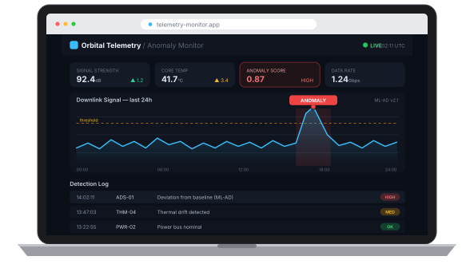
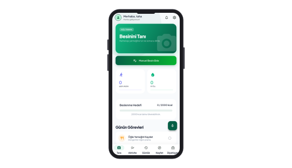
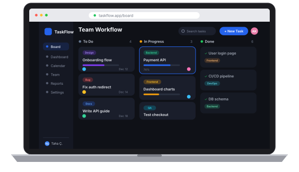
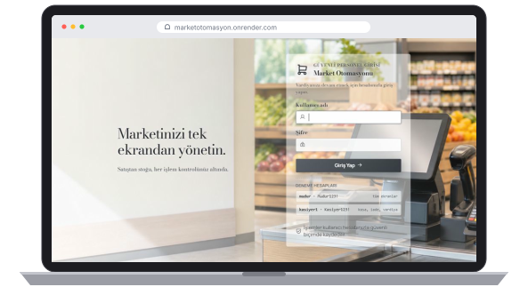
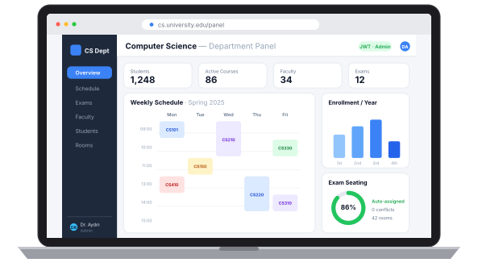
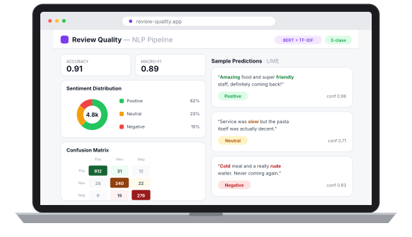
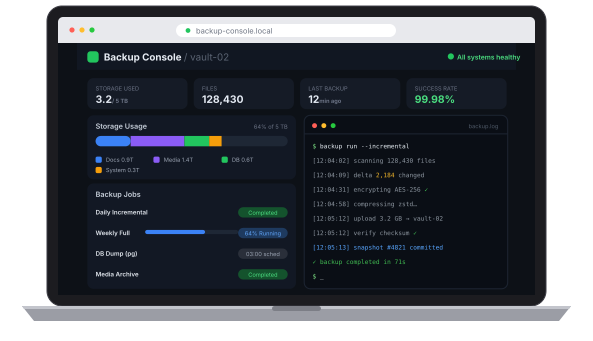

Web Geliştirme
Backend'den arayüze uçtan uca web uygulamaları geliştiriyorum; React, Node.js ve ASP.NET Core ile çalışıyorum.
MERHABA, BEN
Yazılım Mühendisi
Tutkulu bir geliştirici ve makine öğrenmesi meraklısıyım. Dinamik web projelerinin ve veri odaklı uygulamaların geliştirme sürecinin tamamında deneyim sahibiyim; kullanıcı ihtiyaçlarıyla sağlam mühendisliği dengeleyen ürünler geliştiriyorum.
Hakkımda
Kocaeli Üniversitesi Yazılım Mühendisliği 4. sınıf öğrencisiyim. Yazılım geliştirme süreçlerinde Full-Stack (frontend & backend) yetkinliklerine sahibim; aynı zamanda makine öğrenmesi ve derin öğrenme alanlarında projeler geliştirerek veri odaklı akıllı çözümler üretme konusunda deneyim kazandım. Analitik düşünen, çözüm odaklı ve sürekli öğrenmeye istekli bir geliştiriciyim.
Üzerinde çalışmayı sevdiğim konular
Backend'den arayüze uçtan uca web uygulamaları geliştiriyorum; React, Node.js ve ASP.NET Core ile çalışıyorum.
Veriden değer üreten modeller üzerinde çalışıyorum: tahminleme, sınıflandırma ve anomali tespiti.
Veri toplama, temizleme ve analiz pipeline'ları kuruyor, ham veriyi anlamlı bilgiye dönüştürüyorum.
Özgeçmişim
.NET & React Full Stack Geliştirme (AkademIQ AI Business School), Makine Öğrenmesi (BTK Akademi), Algoritma ve Veri Yapıları İleri Seviye (BTK Akademi), B2 Seviye İngilizce Sertifikası (Kırklareli Avrupa Dil Okulları).
Birleşik Yazılım Hizmetleri Ltd. Şti. bünyesinde yazılım mühendisliği stajyeri olarak görev alıyorum. Kurumsal yazılım geliştirme süreçlerinde ekiple birlikte çalışıyor, uçtan uca geliştirme pratiklerini gerçek bir üretim ortamında deneyimliyorum.
Argede Bilişim Teknolojileri Sanayi ve Ticaret Ltd. Şti. bünyesinde frontend geliştirme ekibinde yer aldım. Modern web teknolojileriyle arayüz geliştirme, bileşen tabanlı mimari ve responsive tasarım üzerine çalışarak gerçek bir ürün geliştirme sürecinde deneyim kazandım.
Yeteneklerim
Son Çalışmalar


Mobil & Derin Öğrenme
TÜBİTAK 2209-A destekli araştırma projesi. Flutter ve Dart ile geliştirilen, Python/FastAPI tabanlı backend ve TensorFlow Lite modeliyle görme engelli bireylerin besinleri tanımasına, sesli geri bildirim almasına ve günlük kalori takibi yapmasına yardımcı olan erişilebilir mobil uygulama.





İletişim
Projelerim veya çalışmalarım hakkında merak ettiğiniz bir şey olursa formu doldurabilir ya da doğrudan e-posta ile yazabilirsiniz.